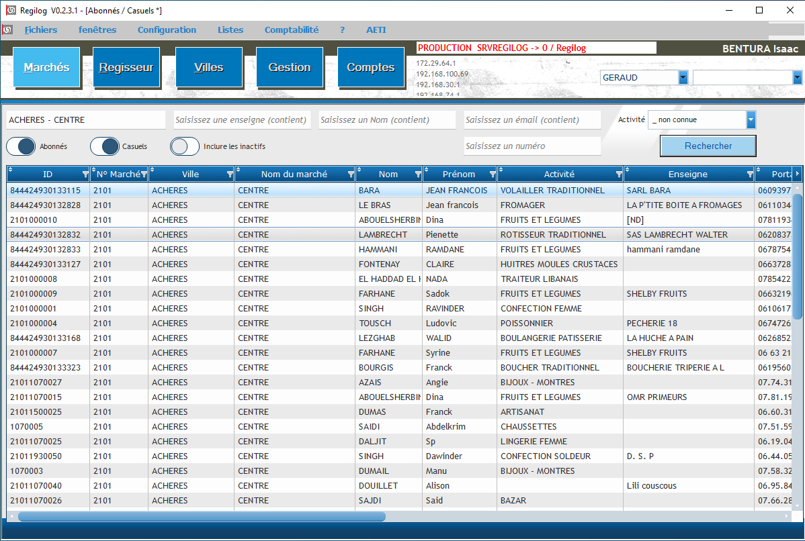
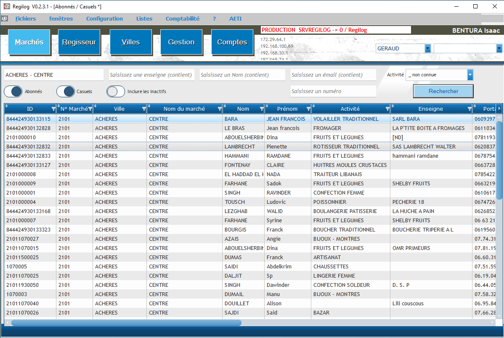

à propos de moi
Je m’appelle Pinhas Bentura et je suis étudiant en BTS SIO, option SLAM.
Dans le cadre de ma
formation en alternance,
j’ai eu l’opportunité de mettre en pratique mes compétences au sein du groupe Géraud.
Ce portfolio a pour but de présenter mes réalisations, les compétences acquises et les projets auxquels
j’ai participé durant cette période.
Le BTS SIO m’a permis d’approfondir mes connaissances en développement et en administration des systèmes
informatiques,
et cette alternance représente une étape clé dans mon parcours professionnel.
Vous trouverez dans ce document une synthèse de mes travaux, ainsi que des réflexions sur mon
apprentissage.
Enfin, je structurerai ce portfolio en plusieurs sections, abordant mon parcours, mes projets, mes
compétences techniques et mes expériences en entreprise.
 
